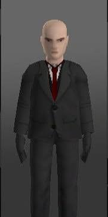
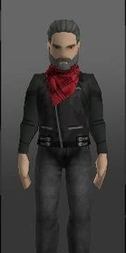
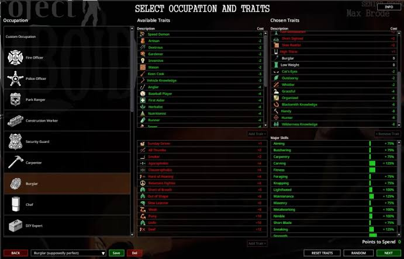
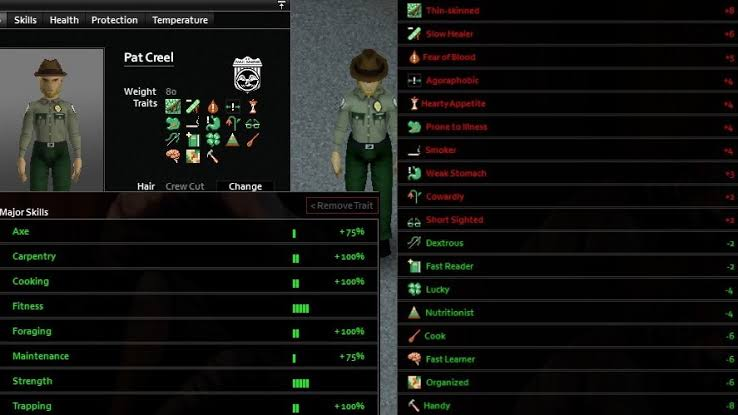
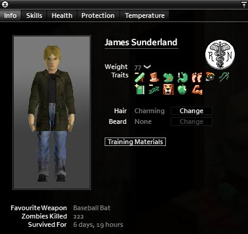

Início › Personagem
Criação de personagem
Antes do apocalipse, você define quem o sobrevivente era. A criação funciona como um equilíbrio de pontos: escolha uma profissão, combine vantagens e desvantagens e termine a ficha com zero ou mais pontos disponíveis.


Você pode criar o personagem do jeito que quiser e personalizá-lo de infinitas maneiras: nome, aparência, roupas, profissão e traços.
Estrutura da criação
- Ponto de partida: a cidade inicial define a dificuldade dos primeiros dias, por causa da densidade de zumbis e dos recursos disponíveis.
- Profissões: cada ocupação custa ou concede pontos e dá bônus permanentes de experiência em habilidades específicas, além de liberar receitas exclusivas.
- Traços positivos: vantagens que consomem pontos, como mais força física, aprender rápido ou enxergar melhor no escuro.
- Traços negativos: defeitos que devolvem pontos para gastar, como precisar fumar, ter sede excessiva ou ser desajeitado.
- Aparência e nome: você personaliza o visual, as roupas iniciais e o nome, sem impacto direto nas mecânicas de sobrevivência.

Profissões de destaque
| Profissão | O que oferece |
|---|---|
| Desempregado | Nenhum bônus inicial, mas dá oito pontos extras para investir livremente em traços. |
| Bombeiro | Ótimo para combate e sobrevivência física, com bônus elevados em força, condicionamento e uso de machados. |
| Carpinteiro | Facilita construir muros, barreiras e coletores de água logo nos primeiros dias. |
| Ladrão | Faz ligação direta em carros desde o início e melhora a movimentação furtiva. |
| Policial | Focado em armas de fogo, com alta precisão e recarga rápida. |
Estratégia com traços
- Negativos gerenciáveis: fumante, miopia e estômago fraco rendem muitos pontos e são fáceis de contornar com itens comuns do mapa.
- Positivos essenciais: atlético, forte e aprendiz rápido aceleram a progressão e aumentam a capacidade de carga e o dano.
- Multiplicadores de experiência: apenas um ponto inicial em uma habilidade já acelera muito a evolução dela durante a partida.
- Fator sobrevivência: não existem personagens prontos com história fixa. Cada ficha é uma vida nova, que dura até o próximo erro fatal.

Veja a lista completa na página de Traits.
A ficha em jogo

Depois de criado, o painel mostra tudo sobre o seu sobrevivente. Ao lado ficam as abas Habilidades, Saúde, Proteção e Temperatura, que acompanham o corpo e as perícias ao longo da partida.